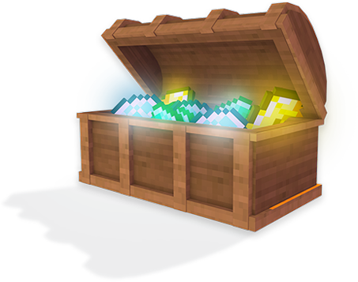
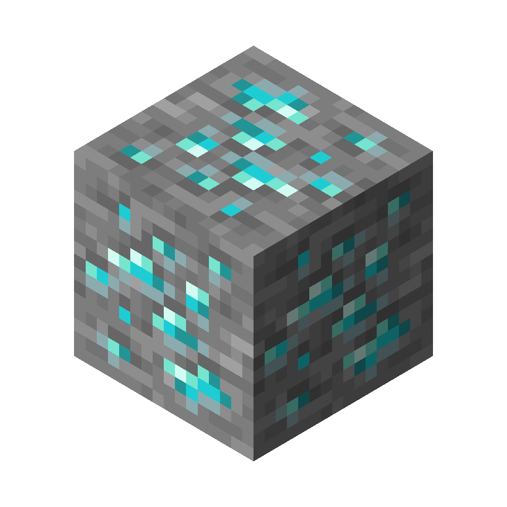

Ip: cheburworld_test.aternos.me
Война кланов!

Подробнее о войне: В течении недели идет борьба за 1 место в списке кланов. На выходных подводяться итоги. Худший клан получает бан на 3 дня. Вам нужно учесть что худший клан за месяц получает бан, а не за неделю. А лучший получает доп.ресурсы например: алмазы, изумруды, алмазное зачарованное оружие. Тот кто будет лучшим за 3 месяца получает донат ВИП на 3 недели. Он включает в себя возможность летать и невозможность получить бан за плохую игру.
Доступность и простота
Сервер доступен на версии бедрок(более ранее название MCPE) от 1.21.40 до 1.21.60! Сервер доступен на джаве с версии 1.8 до 1.21.5. При выходе новых версий сервер обновляется на них. На сервере никаких изменений в ванилле кроме кланов. Если вы хотели поиграть с друзьями, но у них нет компьютера это идеальный вариант для вас. На сервер при релизе будет установлен плагин на античит и антиспам! Вы сможете комфортно поиграть здесь. Также из-за некоторых плагинов тут не будет большого пинга.(Я сомневаюсь конечно что это понадобиться ведь у большинства русскоговорящих нормальный интернет)
Заработок сервера и ютуберы

Естественно как же без заработка да? У сервера есть свой ТГ чат. Почему не сделать его донатную копию? В донатном чате вы можете узнать информацию по разработке сервера и предложить свои идеи. (Конечно, идеи обычных игроков я тоже учитываю, но так будет возможность быстрее получить информацию. Естественно серверу нужны люди которые будут продвигать сервер! Поэтому все кто будут иметь 190-200 подписчиков получат возможность стать официальным ютубером сервера. Также нужно будет снимать видео по серверу раз в 3 недели. Вы получите ВИП на сервере на время вашего нахождения в ютуберах сервера. Подать заявку можно
здесь
Прогресс по разработке
В данный момент сервер делается полностью заново! Плагин для кланов был установлен. Также античит и антиспам установлены, но не настроены. Плагин на разные версии установлен и работает. Плагин на поддержку бедрока не работает. Могу назвать несколько плагинов которые будут на сервере: MultiChat, simpleclan, ViaVersion, GeyserMC
ТГ чат
Обновления Майнкрафта